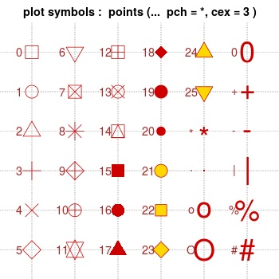

5.2 Personalización de gráficos
En muchas ocasiones nos interesará cambiar la presentación por defecto que R utiliza a la hora de dibujar un gráfico. Afortunadamente, R nos permite cambiar esta configuración por defecto y personalizar la apariencia de nuestros gráficos. A lo largo de esta sección veremos cómo, utilizando para ello ejemplos de uso de la función plot (aunque muchos de los parámetros que veremos se pueden utilizar también con otras funciones gráficas, como se puede comprobar consultando la documentación de R).
Existen básicamente dos mecanismos que podemos utilizar a la hora de configurar los parámetros gráficos:
La función par se utiliza si queremos cambiar los parámetros durante la sesión (es decir, una vez establecidos los parámetros, mientras no se cambien de nuevo o se cierre la sesión se utilizarán a la hora de dibujar nuestros gráficos).
Utilizando los parámetros gráficos directamente como argumentos a la hora de llamar a las funciones de representación (en ese caso los parámetros se utilizarán sólo en esa llamada).
En los siguientes apartados veremos ejemplos de cómo utilizar estos dos mecanismos alternativos a la hora de configurar distintos aspectos de la apariencia de un gráfico.
5.2.1 Símbolos y líneas
Como indicamos en apartados anteriores, por defecto plot dibuja un diagrama de dispersión de los datos. Sin embargo, es posible configurar la función para que utilice líneas uniendo los puntos y para que cambie el tipo de línea y el tipo de punto. Para ello se utilizan principalmente cuatro parámetros gráficos:
- pch: configuración del tipo de punto (valor numérico entero o carácter).

Figura 6. Códigos de los tipos de puntos.
Fuente: http://www.cookbook-r.com/Graphs/Shapes_and_line_types/
cex: configuración del tamaño del punto (escala numérica relativa, por defecto valor 1; así el valor 1.5 indica que el tamaño será un 50 % mayor que el valor por defecto).
lty: se utiliza para especificar el tipo de línea (valor numérico entero o carácter).

- lwd: define el ancho de línea (valor numérico relativo, como cex).
Podemos ver a continuación ejemplos de uso de estos parámetros:
x<-seq(1,10)
y<-log(x)
plot(x, y, type="b", pch=2, cex=1.2, lty=3, lwd=1.2) Figura 5.6: Cambiando el tipo de línea y de punto.
Se puede ver que hemos utilizado además el parámetro type de plot que permite especificar el tipo de representación gráfica (los valores más usados son «p» ─dibujar sólo puntos─; «l», ─solo líneas─ y «b» ─puntos y líneas, como en este caso─).
Nótese que en este ejemplo hemos incluido los parámetros gráficos directamente como argumentos de entrada de la función plot. Sin embargo, es también posible utilizar la función par, como indicamos anteriormente:
parViejo<-par(no.readonly=TRUE) # (1)
par(pch=2, cex=1.2, lty=3, lwd=1.2) # (2)
plot(x,y, type="b") # (3) Figura 5.7: Cambiando el tipo de línea y de punto.
par(parViejo) # (4) Donde, como se puede ver, comenzamos salvando dentro de la variable parViejo los valores de parámetros gráficos previamente existentes
llamamos a continuación a la función par para establecer la nueva configuración gráfica
dibujamos los gráficos necesarios
(si fueran varios, utilizarían la configuración indicada por par) y por último restauramos la configuración previa
(si lo creemos necesario).
5.2.2 Colores
Otro parámetro gráfico que es posible configurar es el color utilizado para representar la información. Los principales parámetros relacionados con este aspecto de configuración son:
col: Color que se utiliza para dibujar el gráfico.
col.lab: Color para las etiquetas de los ejes.
col.main: Color para el título.
col.sub: Color para el subtítulo.
A la hora de especificar los colores tenemos varias alternativas, las más usualmente utilizadas son:
Utilizando un nombre de color (la lista de nombres de colores disponibles se puede obtener con una llamada a la función colors).
Utilizando un código RGB (Red, Green, Blue) en hexadecimal (Ej.: #FFAA11) o en decimal (Ej.: rgb(128, 100, 32)).
Existen funciones que permiten obtener los códigos de colores relacionados (Ej.: gray o heat.colors):
gray(seq(1,4)/4) # 4 colores de la escala de grises
# [1] "#404040" "#808080" "#BFBFBF" "#FFFFFF"
heat.colors(4) # 4 colores 'cálidos'
# [1] "#FF0000FF" "#FF8000FF" "#FFFF00FF" "#FFFF80FF" Podemos ver un ejemplo de configuración de los colores de un gráfico a continuación:
x<-seq(1,10)
y<-log(x)
plot(x,y,type='b', col="blue", col.lab=rgb(0.4,0.4,0.4),
col.main='#04B404', main="Función logaritmo") Figura 5.8: Ejemplo de uso de colores en un gráfico.
5.2.3 Límites de los ejes
En ocasiones nos puede interesar centrar nuestra representación en un área concreta para destacar ciertos aspectos del gráfico. Para ello podemos utilizar los parámetros xlim e ylim que nos permiten especificar los límites (tanto en el eje x como en el y) del área (rectangular) que va a ser representada. Estos parámetros suelen tomar como valor un vector de dos números (el inicio y el fin del intervalo que queremos que se muestre):
x<-1:100
y<-log(sin(x)^2)
plot(x,y, type='b', xlim=c(10,50), ylim=c(-4,2)) Figura 5.9: Definiendo los límites de los ejes.
5.2.4 Leyendas y texto
Para hacer más legible una representación gráfica podemos pensar en añadir una leyenda explicativa o incluso en etiquetar ciertos puntos del gráfico de especial relevancia.
La función legend nos permite añadir una leyenda. A través de los parámetros de esta función especificaremos la posición del cuadro de la leyenda (usualmente se indican las coordenadas x e y de la esquina superior izquierda del cuadro), su título (parámetro title) y las etiquetas de cada entrada de la leyenda (parámetro legend).
x<-1:100
y<-log(x)
plot(x, y, type="b",pch=1, lty=1, col="blue", main="La función logaritmo")
legend(x=60,y=2, pch=1, lty=1, col="blue",title="Leyenda", legend="Logaritmo") Figura 5.10: Uso de leyenda en un gráfico.
La función text se utiliza cuando queremos etiquetar uno o varios puntos de la gráfica. Recibe usualmente como parámetros los valores x e y de los puntos a etiquetar, y las etiquetas a añadir en cada punto (parámetro labels).
x<-1:100
y<-log(sin(x)^2)
min(y)
# [1] -9.45438
which(y==min(y))
# [1] 22x<-1:100
y<-log(sin(x)^2)
plot(x, y, col='blue', type='b', pch=2, lty=4, ylim=c(-12,2))
text(x=c(22), y=c(-10), labels=c("Mínimo")) Figura 5.11: Etiquetando puntos de un gráfico.
En ocasiones podemos estar interesados también en utilizar expresiones matemáticas dentro de las etiquetas de nuestros gráficos. Para ello crearemos una expresión de R (con la función expression) que pasaremos como argumento en los parámetros que representen las etiquetas. Así por ejemplo, sabemos que podemos utilizar el parámetro main para establecer el título de un gráfico. Pues bien, si queremos que el título contenga una expresión matemática podemos hacer:
x<-1:100
y<-log(x+x^2)
plot(x, y, col='blue', type='b',
main = expression(paste("Función log(", x+x^2, ")"))) Figura 5.12: Ejemplo de expresión matemática en el título.
Se puede encontrar más información sobre el formato que tenemos que utilizar para representar las expresiones en la ayuda de R con ?plotmath.
5.2.5 Añadiendo una rejilla
Añadiendo una rejilla a un gráfico tendremos una serie de referencias con las que comparar la información ofrecida por el gráfico. En R podemos dibujar una rejilla utilizando la función grid.
A través de los parámetros nx y ny podemos indicar el número de líneas que tendrá la rejilla en cada eje de coordenadas (si no especificamos nada, se dibujarán líneas coincidiendo con los puntos etiquetados en los ejes). Además, al igual que plot, podemos utilizar también en esta función los parámetros col, lty y lwd para establecer el color, el tipo de línea y el ancho de línea de la rejilla. Veamos un ejemplo:
x<-1:100
y<-log(x)
plot(x,y,col='blue',type='b')
grid(col='red', lty='dashed', lwd=0.5) Figura 5.13: Ejemplo de gráfico con rejilla.